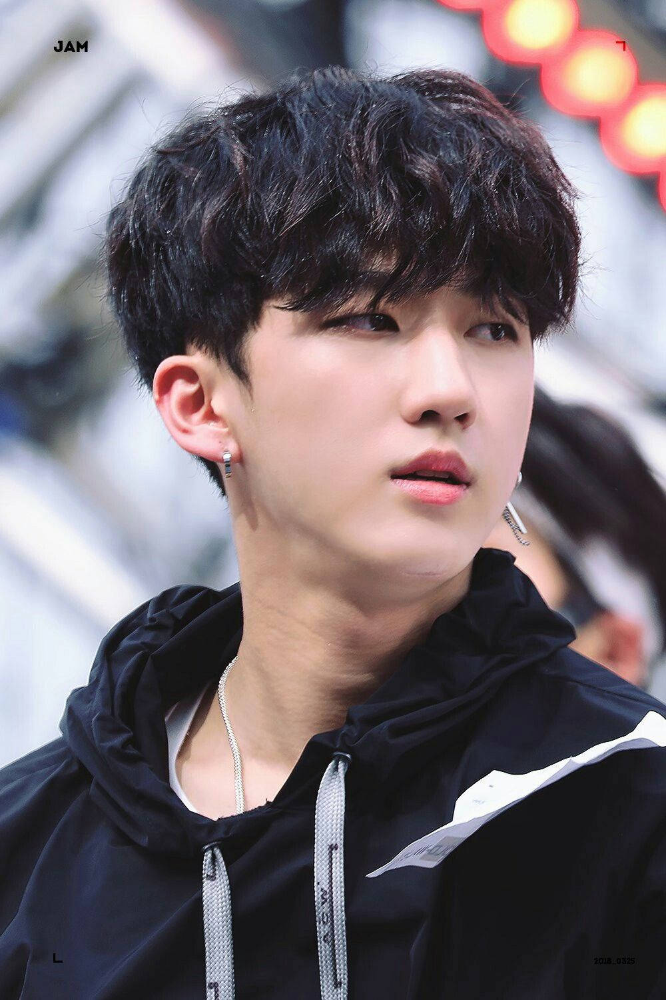
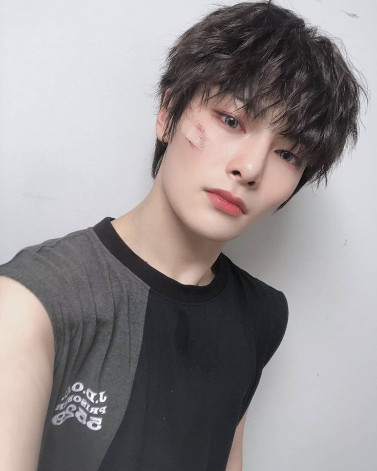

História dos Stray Kids
Stray Kids é um grupo sul-coreano formado pela JYP Entertainment, composto por oito membros. O grupo foi formado através de um reality show de mesmo nome, transmitido em 2017. Stray Kids é conhecido por suas músicas energéticas, letras profundas e grande talento em composição e produção musical.
Desde seu debut em 2018, Stray Kids se tornou um dos grupos mais populares do K-Pop, com uma base de fãs global chamada "Stay". Suas músicas abordam temas como crescimento pessoal, superação e a busca pela identidade.
Membros do Stray Kids
Bang Chan
Bang Chan é o líder do grupo, e é conhecido por sua habilidade excepcional em produção musical. Ele é o produtor e compositor principal de muitas das músicas do Stray Kids.

Lee Know
Lee Know é um dançarino incrível e se destaca por sua performance de palco. Ele é também um dos principais vocais do grupo.

Changbin
Changbin é o rapper principal do grupo, conhecido pela sua habilidade em rap rápido e suas letras impactantes. Ele também é muito ativo na produção de músicas.
Hyunjin
Hyunjin é o principal dançarino do grupo e é amplamente reconhecido por sua energia de palco e habilidades de dança excepcionais.

Han
Han é um rapper e vocalista, conhecido pela sua criatividade na composição e pela habilidade de produzir suas próprias músicas.
Felix
Felix é um dos rappers principais do grupo e é facilmente reconhecido por sua voz profunda e distinta. Ele também é um dos dançarinos do grupo.

Seungmin
Seungmin é o vocalista principal do grupo, conhecido por sua voz suave e potente. Ele é um dos membros mais adorados por sua personalidade gentil e cativante.

I.N
I.N é o membro mais jovem do Stray Kids e é o vocalista mais suave. Ele tem um talento incrível para cantar e transmite uma energia positiva ao grupo.

{kind=link}
{kind=link}
{kind=link}
Deixe seu Comentário